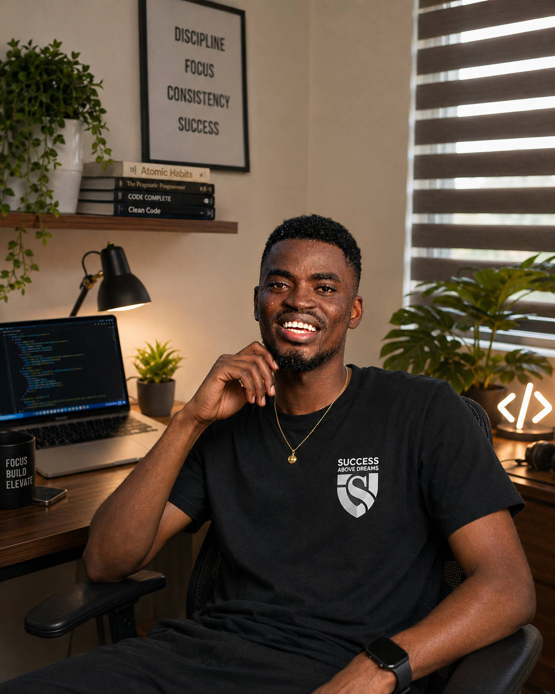

Project context
The work begins with a real audience, a real problem, and a clear need for something useful to exist.
I am not interested in ideas that look good in a pitch but fall apart once real people start using them. Under Success Above Dreams, every system begins with a real need and only becomes meaningful once it can hold up in the work it is meant to support.

The work begins with a real audience, a real problem, and a clear need for something useful to exist.

These moments reflect the public-facing work and community engagement that shape the products and services.
They also reflect the recognition and learning that come from building in public and staying committed to the work.

I currently work as a receptionist at NS Luxury Villa in Ho. Experiencing the daily guest booking and operational needs firsthand, I took the initiative to design, build, and deploy their official website.
Guests would call the front desk asking about rooms, rates, what the pool and rooftop looked like, how to find the place. I built the website so that information exists somewhere they can just go look — rooms, event spaces, directions, and a direct way to book.
Full-stack e-commerce web platform deployed for authentic skincare, beauty cosmetics, and essentials across Ghana.
I built and deployed their full online store at crcosmeticsgh.com — somewhere Ghanaian shoppers can browse skincare, beauty, and everyday essentials, check what is available, and order with delivery anywhere in Ghana.